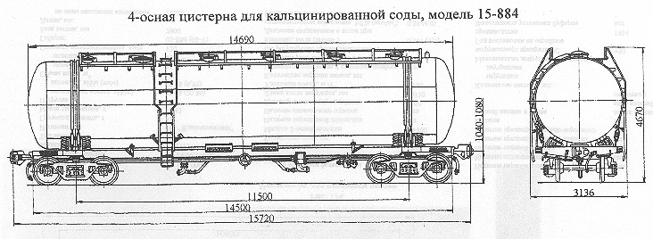

Назначение: для бестарной перевозки порошкообразной кальцинированной соды
Параметры
| Номер проекта | 884.00.000-1 |
| Технические условия | ТУ 24.00.120-82 |
| Модель вагона | 15-884 |
| Тип вагона | 970 |
| Изготовитель | ПО "Ждановтяжмаш" |
| Грузоподъемность, т | 54 |
| Масса тары вагона, т | 31,3 |
| Нагрузка: статическая осевая, кН(тс) |
208,9(21,3) |
| погонная, кН/м(тс/м) | 53,2(5,4) |
| Объем котла, м3: полный |
101,6 |
| полезный | 83,6 |
| Скорость конструкционная, км/ч | 120 |
| Габарит | 1-ВМ(0-Т) |
| База вагона, мм | 11500 |
| Длина, мм: по осям сцепления автосцепок |
15720 |
| по концевым балкам рамы | 14500 |
| Высота от уровня верха головок рельсов максимальная, мм | 4670 |
| Количество осей, шт. | 4 |
| Модель 2-осной тележки | 18-100 |
| Наличие переходной площадки | нет |
| Наличие стояночного тормоза | есть |
| Диаметр котла внутренний,мм | 3000 |
| Длина котла наружная,мм | 14690 |
| Наличие смотрового люка | нет |
| Удельный объем, м3/т | 1,55 |
| Количество загрузочных люков, шт. | 5 и 1 лазовый |
| Количество аэролотков, шт.: малых |
4 |
| больших | 4 |
| Количество аэроплиток, шт. | |
| Удельное рабочее давление в котле (по регулировке предохранительного клапана), МПа(кгс/см2) | 0,22(2,2) |
| Давление создаваемое в котле, МПа(кгс/см2): при разгрузке |
0,2(2,0) |
| при загрузке | нет |
| Производительность выгрузки, т/ч | 54 |
| Диаметр лазового люка, мм | 575 |
| Давление создаваемое в котле при гидравлическом испытании, МПа(кгс/см2) | 0,3(3,0) |
| Диаметр, мм: загрузочного люка |
400 |
| разгрузочного патрубка | 150 |
| Угол наклона откоса к горизонту, град | 50 |
| Количество секций котла, шт. | 1 |
| Наличие парообогревательной рубашки | нет |
| Наличие теплоизоляции | нет |
| Толщина изоляции, мм | нет |
| Наличие теневой защиты | нет |
| Наличие предохранительного клапана | нет |
| Наличие предохранительно-впускного клапана | |
| Максимально допустимая температура загружаемого продукта, °C | +80 |
| Год постановки на серийное производство | 1968 |
| Возможность установки буфера | нет |